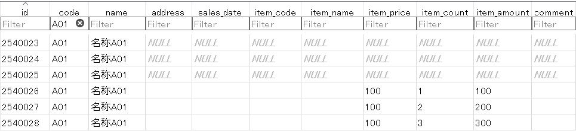

データベースにおけるNULLの扱い方
エクセルVBAでデータベースを扱うためのSQL入門です。
前回はSQL関数と演算子について解説しましたが、その中でNULLに関するものがでてきました。
「NULLについては、次回詳しく解説します。」と記載、今回はNULLについて解説します。
これと同様に、データベースにおいてもNULLと空文字（長さ0の文字列）は意識して扱う必要があります。
データベースにおいてNULLの扱いは特別に判定する必要があり、NULLを判定するための専用の演算子やSQL関数が用意されています。
演算子やSQL関数を紹介しつつ、NULLの扱い方について順に解説していきます。
NULLデータのINSERT
CREATE TABLE t_sales (
'id' INTEGER PRIMARY KEY AUTOINCREMENT NOT NULL
,'code' TEXT NOT NULL
,'name' TEXT NOT NULL
,'address' TEXT
,'sales_date' TEXT
,'item_code' TEXT
,'item_name' TEXT
,'item_price' INTEGER
,'item_count' INTEGER
,'item_amount' INTEGER
,'comment' TEXT
);
このテーブルにデータをINSERTしたとき、フィールドをNULLにする方法は大きく分けると2通りあります。
逆の言い方をすれば、フィールドがNULLになる原因が2通りあるという事です。
データを挿入するカラムだけ指定することができます。
ただし、NOT NULL制約のカラムは省略できません。
INSERT INTO t_sales ("code","name") VALUES ('A01',"名称A01")（もちろんidは連番が振られます。）
codeとnameは、NOT NULL制約になっているので省略できませんが、他のカラムは制約がありませんので省略可能です。
そして、省略したカラムはNULLになります。
※「DB Rrowser for SQLite」の画面
以下で説明していますが、文字列型にNULLがあると文字列結合が面倒になります。
文字列結合するようなカラムにはNOT NULLやDEFAULTで空文字を指定することを検討してください。
VALUEにNULLを指定するには、キーワードとしてnullまたはNULLと記述します。
INSERT INTO t_sales
("code","name","address","sales_date","item_code"
,"item_name","item_price","item_count","item_amount","comment")
VALUES
('A01','名称A01',NULL,NULL,NULL,NULL,NULL,NULL,NULL,NULL)
,('A01','名称A01',NULL,NULL,NULL,NULL,NULL,NULL,NULL,NULL)
,('A01','名称A01','','','','',100,1,100,'')
,('A01','名称A01','','','','',100,2,200,'')
,('A01','名称A01','','','','',100,3,300,'')
※「DB Rrowser for SQLite」の画面
これ以降は、上記のデータをSELECTした時の結果を掲載しています。
NULLに関する演算子とSQL関数
IS NULL演算子
式がNULLかどうかを判定します。
式がNULLの場合に真を返します。
否定の場合は、
IS NOT NULL
とします。
これではNULL判定できません。
IFNULL関数
式の値がNULLの場合は第2引数の値を返します。
式の値がNULL以外の場合は式の値を返します。
IS NULL の使用例
Sub SelectNull()
Dim clsDB As New clsSQLite
clsDB.DataBase = "C:\SQLite3\sample.db"
Dim ws As Worksheet
Set ws = ActiveSheet
Dim sSql As String
sSql = ""
sSql = sSql & "SELECT *"
sSql = sSql & " FROM t_sales"
sSql = sSql & " WHERE code = 'A01'"
sSql = sSql & " AND item_code IS NULL"
If Not clsDB.SheetFromRecordset(sSql, ws.Range("A1"), Clear, True) Then
MsgBox clsDB.ErrMsg
Exit Sub
End If
Set clsDB = Nothing
End Sub
実行結果のシートです。
※これ以降はSQL部分のみ掲載します。
IS NOT NULL の使用例
sSql = sSql & "SELECT *"
sSql = sSql & " FROM t_sales"
sSql = sSql & " WHERE code = 'A01'"
sSql = sSql & " AND item_code IS NOT NULL"
実行結果のシートです。
IFNULL の使用例
sSql = sSql & "SELECT code,name"
sSql = sSql & ",IFNULL(item_code,'ヌル'),IFNULL(item_name,'ヌル')"
sSql = sSql & " FROM t_sales"
sSql = sSql & " WHERE code = 'A01'"
実行結果のシートです。
文字列結合におけるNULLの挙動
sSql = sSql & " IFNULL(name,'ヌル'),IFNULL(item_name,'ヌル')"
sSql = sSql & ",IFNULL(name || item_name,'ヌル')"
sSql = sSql & " FROM t_sales"
sSql = sSql & " WHERE code = 'A01'"
実行結果のシートです。
ただし、DBによっては空文字になるものもあります。
NOT NULL制約のないカラムの場合は、IFNULL関数を使うようにしてください。
集計関数におけるNULLの挙動
sSql = sSql & "SELECT code"
sSql = sSql & ",COUNT(*)"
sSql = sSql & ",COUNT(item_amount)"
sSql = sSql & ",SUM(item_amount)"
sSql = sSql & ",AVG(item_amount)"
sSql = sSql & " FROM t_sales"
sSql = sSql & " WHERE code = 'A01'"
sSql = sSql & " GROUP BY code"
実行結果のシートです。
COUNT(カラム名)は、NULL以外のセルの個数を返します。
SUM関数、AVG関数、MAX関数、MIN関数はNULLを無視します。
NULLの扱い方の最後に
少なくとも、文字列型のカラムはNULLにならないようにした方が扱いやすいでしょう。
他のDBでは、指定のデータ型（数値型や日付時刻型）以外のデータは入れることが出来ず、指定のデータ型またはNULLしか入れることができません。
例えば、数値や日付時刻が存在しない場合として、どうしてもNULLを入れておく必要が出てきます。
そして、常にNULLの扱いは面倒なものです。
NULLがあるのかないのか、しっかりと把握してSQLを書くようにしてください。
それは、データをマスタデータとトランザクションデータに分けて複数のテーブルを作成していくことになります。
それには、「データベースの正規化」、これを学ぶ必要があります。
同じテーマ「SQL入門」の記事
VBAクラスの全コード：データの取得
データの取得：集約集計、並べ替え（DISTINKT,GROUP,HAVING,ORDER）
SQL関数と演算子
データベースにおけるNULLの扱い方
データベースの正規化とマスタの作成
全テーブル定義とテーブル自動作成VBA
テーブルを結合して取得（INNER JOIN,OUTER JOIN）
複数のSELECT結果を統合（UNION,UNION ALL）
データの更新（UPDATE）
データの削除（DELETE）
他のテーブルのデータで追加/更新/削除
新着記事NEW ・・・新着記事一覧を見る
VBA100本ノック 100本目：WEBから100本ノックのリストを取得｜VBA練習問題（3月3日）
VBA100本ノック 99本目：自動席替え（行列と前後左右が全て違うように）｜VBA練習問題（3月2日）
VBA100本ノック 98本目：席替えルールが守られているか確認｜VBA練習問題（3月1日）
VBA100本ノック 97本目：Accessデータを取得（グループ集計）｜VBA練習問題（2月27日）
VBA100本ノック 96本目：Accessデータを取得（マスタ結合&抽出）｜VBA練習問題（2月26日）
VBA100本ノック 95本目：図形のテキストを検索するフォーム作成｜VBA練習問題（2月24日）
VBA100本ノック 94本目：表範囲からHTMLのtableタグを作成｜VBA練習問題（2月23日）
VBA100本ノック 93本目：複数ブックを連結して再分割｜VBA練習問題（2月22日）
VBA100本ノック 92本目：セルの色を16進で返す関数｜VBA練習問題（2月20日）
VBA100本ノック 91本目：時間計算（残業時間の月間合計）｜VBA練習問題（2月19日）
アクセスランキング ・・・ ランキング一覧を見る
1.最終行の取得（End,Rows.Count）｜VBA入門
2.RangeとCellsの使い方｜VBA入門
3.変数宣言のDimとデータ型｜VBA入門
4.マクロって何？VBAって何？｜VBA入門
5.Range以外の指定方法（Cells,Rows,Columns）｜VBA入門
6.セルのコピー&値の貼り付け（PasteSpecial）｜VBA入門
7.繰り返し処理（For Next)｜VBA入門
8.セルに文字を入れるとは（Range,Value）｜VBA入門
9.マクロはどこに書くの（VBEの起動）｜VBA入門
10.とにかく書いてみよう（Sub,End Sub）｜VBA入門
このサイトがお役に立ちましたら「シェア」「Bookmark」をお願いいたします。
記述には細心の注意をしたつもりですが、
間違いやご指摘がありましたら、「お問い合わせ」からお知らせいただけると幸いです。
掲載のVBAコードは動作を保証するものではなく、あくまでVBA学習のサンプルとして掲載しています。
掲載のVBAコードは自己責任でご使用ください。万一データ破損等の損害が発生しても責任は負いません。